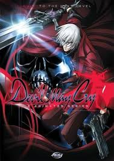
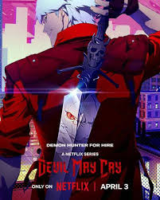
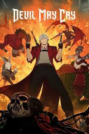

Devil May Cry: The Animated Series
2007O anime de Devil May Cry acompanha Dante em diversas missões como caçador de demônios. A série apresenta batalhas intensas, criaturas sobrenaturais e momentos que exploram a personalidade descontraída do protagonista.
A animação foi produzida pelo estúdio Madhouse e possui 12 episódios.

Nova Série da Netflix
2026A franquia também recebeu uma adaptação produzida pela Netflix, trazendo uma nova visão do universo de Devil May Cry.
A produção apresenta cenas de ação cinematográficas, animação moderna e diversos personagens clássicos da série.

Expansão do Universo
As adaptações em anime ajudaram a expandir o universo de Devil May Cry, aprofundando histórias, personagens e acontecimentos que complementam os jogos.
O sucesso da franquia consolidou Devil May Cry como uma das séries mais icônicas do gênero ação hack and slash.